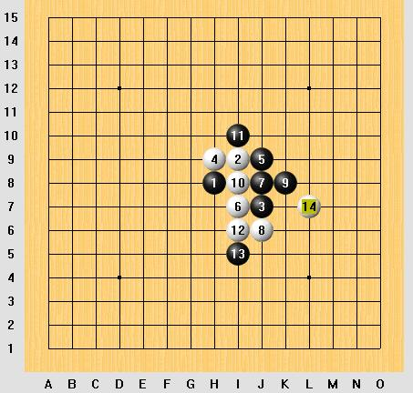

新水一打的一个变化如何必胜?
#1 新水一打的一个变化如何必胜? 作者：sheal 发表时间：2007-6-23 15:28:31

上图的黑白着法应该没有问题吧?
请问黑15放哪里可以必胜?
#2 Re:新水一打的一个变化如何必胜? 作者：sheal 发表时间：2007-6-28 18:27:25
已解决.#3 Re:新水一打的一个变化如何必胜? 作者：longfx 发表时间：2007-6-30 19:20:26
15K10#4 Re:新水一打的一个变化如何必胜? 作者：gerbo 发表时间：2007-7-3 18:27:41
楼主请你发下图片,让我们也学习学习下~感谢~!!!#5 Re:新水一打的一个变化如何必胜? 作者：longfx 发表时间：2007-7-4 16:55:18
这个不难吧.1分钟就可以出地毯了~